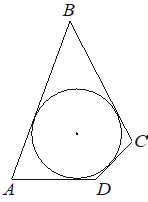

Впишите правильный ответ.
В четырёхугольник ABCD, периметр которого равен 22, вписана окружность, AB=8. Найдите длину стороны CD.

КЭС: 7.1 Фигуры на плоскости
Тип ответа: Краткий ответ
Источник ФИПИ